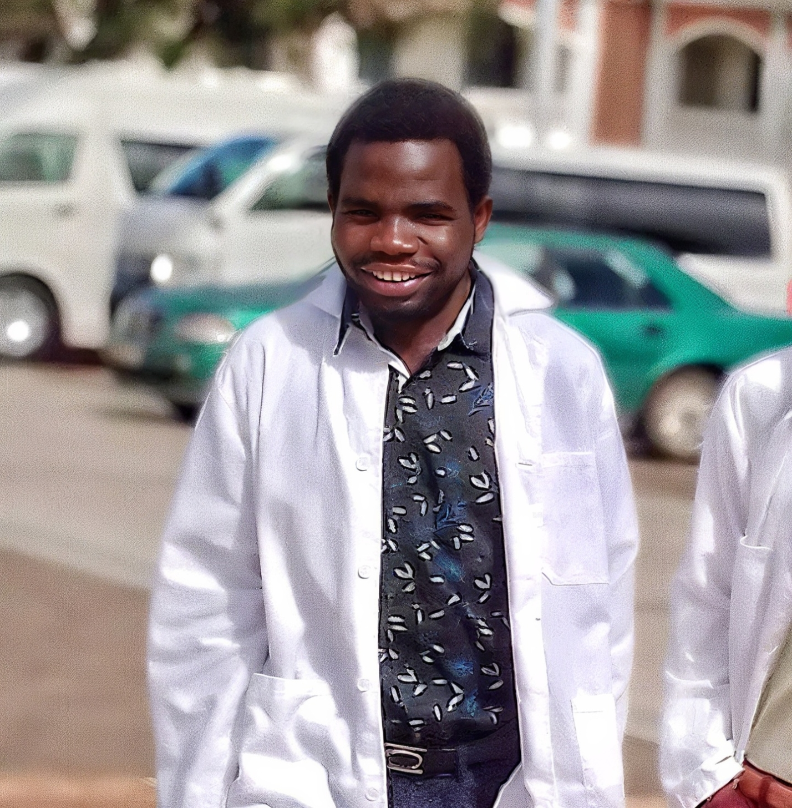

Making Dye From Flowers Project
Exploring the potential of flowers as the source of dye to use in textiles research.
“Dreamer, Scientist, and Creator.”
Hi! I'm Benjamin Mbale, a Medical Microbiology student at the Malawi University of Science and Technology (MUST). I’m passionate about science, technology, leadership, and creativity — combining innovation with problem-solving to make a positive impact in Malawi and beyond.
Here are some highlights of my work and learning journey.
Exploring the potential of flowers as the source of dye to use in textiles research.
Studying gene-editing mechanisms and their applications in molecular microbiology and health innovation.
Building and designing websites using HTML, CSS, and JavaScript — combining science and design thinking.
Analyzing water samples to study microbial composition and antibiotic resistance in aquatic environments.
Isolation of Lytic Bacteriophages against Pseudomonas aeruginosa from QECH effluents.
Here I share reflections, scientific ideas, and personal insights.
Gene editing holds incredible potential, but it requires ethical responsibility and transparency for global safety.
Someday Will Explore This
AI can transform healthcare, education, and agriculture in Malawi — if we invest in young innovators. We can use Nzeru Hub to our advantage in Learning this.
Someday Will Explore This
Balancing science, coding, and leadership is tough but fulfilling — discipline and curiosity make it possible.
Someday Will Explore This
My world of science, creativity, and inspiration.
Books, music, movies, and quotes that inspire my journey.
Get in touch with me through any of these platforms or send me a message directly.